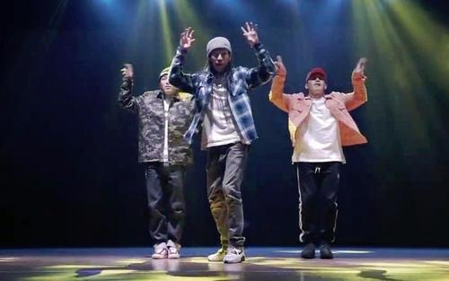
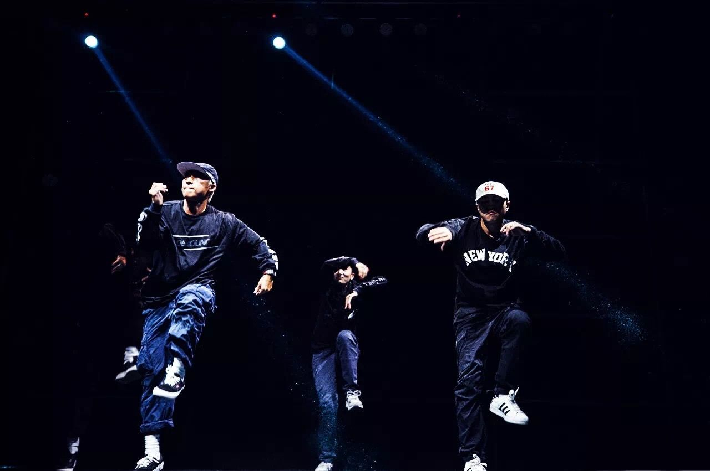

Hipohp舞蹈
Hip-Hop是现在广泛流行的街舞类型，嘻哈舞最开始的原本意指B-Boy，后来才有人用MC唱的歌来跳舞，所以说跳Hip-Hop其实是一种后来的说法，bboy才是Hip-Hop的起源。嘻哈舞的特色是爆发力强，在舞动时，肢体所做的动作亦较其他舞蹈夸张。最吸引人之处，是以全身的活力带来热情澎湃的感觉。
Hip-Hop可主要分为两大类：
1、Old School
Hip-Hop包含：Locking、Popping、Breaking、Wave等舞种，起源于美国街头，多为黑人和墨西哥人，他们常常在街上舞蹈，自然而然形成各种派系，发展成不同风格。到现在，许多舞者或媒体都习惯的将其成为New
York Style，可谓是街舞大串联，身体的扭动和原地性的动作结合Popping、Locking等风格，使其看起来随性自然。
2、New School Hip-Hop是由Old School Hip-Hop演变而来，具体因为New
School使用的音乐多为慢板Hip-Hop或R&B，这些音乐并不适合做出类似Breaking中很多的地板动作，显得爆发力，所以慢慢的分成了两种派系。如今也习惯将其成为L.A
Style，大幅度动作加上脚步的变化性，更注重身体的律动性，可以说是用新的觉来诠释老派的舞步。

Hiphop舞蹈中一些很棒的舞者
1.SEMI 张世民
semi的卡点很特别，动作幅度大但却不明显，虽然比较大只，他的动作反而较为柔软，不会让人感到夸张，呈现出来十分流畅、轻盈，有一种不显山不露水的韵味，甚至有点太极的风骨。另一方面，在电子乐的间奏中，Semi也展现了超强的表现力和控制力，几乎与机械合二为一。在他的呈现之中，观众可以真切的听到每一次机械的震动、笛声的绵延以及水滴的清澈。他的舞蹈是自然、纯粹和特别的，观众永远不知道他的下一个动作是什么，但也不会太在意，因为他早已与音乐融为一体，大家只需要用心去聆听和享受。 点击观看
2.亮亮
Sparkle亮亮。中国hiphop第一人，被称为“hiphop舞界黄景行”。舞蹈的主要风格是hiphip poppin house。juste debout 世界大赛中国赛区冠军，KOD VOL9;有的人一战成名，有的人一蹶不振，但亮亮却参加KOD比赛却坚持了八年，屡战屡败，屡败屡战，正如他说的，他一直都把从前的自己作为自己的目标，今天的自己要比昨天好，今年比赛的成绩要比去年高，直到KOD9的时候，亮亮才终于打败了韩国选手拿到了KOD Hiphop冠军。 这也许也可以用那句大家最熟悉的话来总结，荣誉也许会迟到，但从不会缺席。 点击观看
3.黄景行
他2003年参加荷兰样板戏《中国》的拍摄，该片最终在荷兰荣获最佳舞蹈奖；2004年全国街舞电视大赛获得第一名；2005年荣获HIP-HOP精英赛《BEAT FLAVER FUNKY STLYE》冠军、同年荣获HIP-HOP精英赛《THAT’S MY WAY》的POPPIN 冠军、LOCKIN冠军、“双星杯”全国电视街舞大赛男单第一；2006年国际街舞大赛 冠军、KOD亚洲街舞大赛POPPING BATTLE冠军；2008 UK-BOY世界决赛亚军；2009 KOD5poppin battle 冠军；2010 Juste debout 中国赛区 冠军；2010 KOD6poppin battle 亚军。自学舞以来横扫各大街舞奖项，斩获不少荣誉。80后之窗访谈第15期走进亚洲舞王黄景行。 点击观看